Warsztat programisty
Mateusz Kamiński

Agenda
- Pisanie kodu - IDE
- Repozytoria kodu - Version Control Systems
- Narzędzia budowania aplikacji
- Wersjonowanie aplikacji
- Repozytoria artefaktów
- Ciągła Integracja i Ciągłe dostarczanie
- Zarządzanie projektem programistycznym i nie tylko - Attlasian JIRA
IDE
Dobierany w zależności od typu (języka) projektu.
| Języki | Technologie | IDE |
|---|---|---|
| Java, Kotlin, Scala | backendowe | Intellij IDEA, Eclipse |
| Javascript, Typescript, CSS, HTML | frontedowe | Visual Studio Code, Atom |
Ale zasadniczo wszystko można pisać we wszystkim :)
CTRL+SPACE i inne
- Inteligentne wspomaganie - edytor przewiduje co chcemy napisać
- Analiza kodu - czyli to czego kompilator nie wykryje (i my również :) )
- Clean code - narzędzia "sprzątające" (lintery) i refaktoryzujące
-
Hot reload - podmiana kodu w działającej aplikacji w trybie deweloperskim:
DCEVM
- Użyteczne pluginy - mnogość dodatków usprawniających naszą codzienną pracę
Version Control System
- Nie tylko dla kodu
- Rozproszone lub scentralizowane
- Stanowi portfolio programisty
- Niezależny od języka programowania - nie zwalnia nas od testowania poprawności wprowadzanych zmian!
GIT
Gdzie cetralnie przechowujemy zmiany:
- własny serwer - korporacje lub projekty dla NASA :)
- GitHub
- Bitbucket
- GitLab
- Google Cloud
Ten wybór może wpłynąć na wybór innych narzędzi!
Branch
VCS mają strukturę drzewiastą
Reprezentuje robocze zmiany i nie blokuje innych prowadzonych równolegle do naszych
Wybieramy co chcemy dołączyć do głównej linii
Pozwala na kontrolowaną współpracę wielu osób w jednym projekcie
Prostszy do wycofania w przypadku błędów
Must have configuration
-> wstępna konfiguracja GITa po instalacji
$ git config --global user.name "John Doe"
$ git config --global user.email johndoe@example.com
$ git config --global pull.rebase true
+ wymiana kluczy SSH z serwerem (brak potrzeby używania hasła)
Podstawy obsługi GITa
Można obsługiwać z poziomu GUI ale warto zapoznać się z konsolowymi komendami
# Klonujemy repozytorium na własną maszynę
$ git clone url_to_server && cd repo_name
# Przeniesienie na wybrany branch
$ git checkout branch_name
# Pobranie zmian z serwera (ktoś w międzyczasie mógł coś dodać)
$ git pull
# Utworzenie nowego brancha na którym przeprowadzimy nasze prace
$ git branch branch_name_mine && git checkout branch_name_mine
# Nanosimy zmiany w wybranych miejscach i tworzymy commit
$ git add file1
$ git rm file3
$ git commit -m "Commit message"
# Tym samym utworzyliśmy tzw. lokalny "snapshot" zmian
# W tym momencie zmiany nie są dostępne na głównym serwerze
$ git push
Podstawy obsługi GITa
Warto sprawdzić nawet jeśli komuś się wydaje, że dobrze zna GITa :) https://learngitbranching.js.org 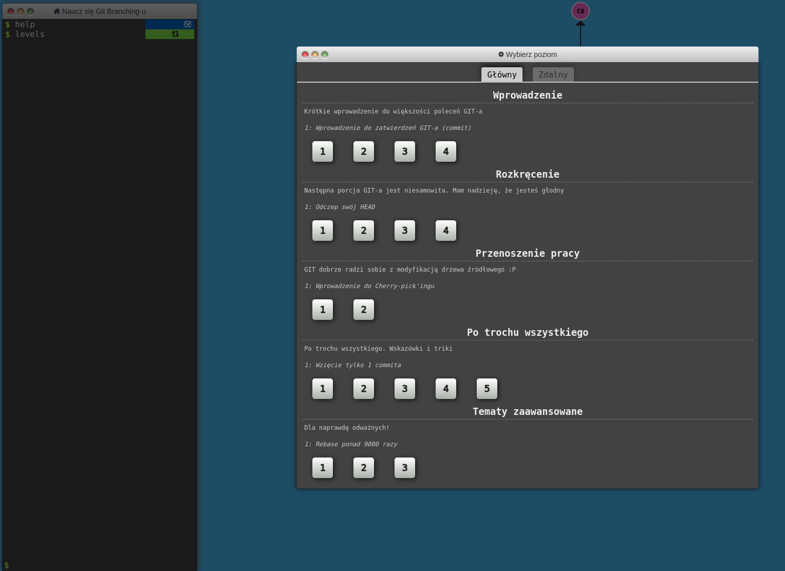Commit - zasady
- Trafna nazwa opisująca w skrócie zrealizowane zmiany w ramach commita.
- Nazwa zawiera odniesienie do zgłoszenia w JIRA lub innego narzędzia do prowadzenia projektów.
- Mniejsze niż większe.
- Staramy się nie nadpisywać istniejącej historii.
- Przed stworzeniem sprawdzamy czy aplikacja buduje się i działa poprawnie (w zakresie naszych zmian).
Merge vs Rebase

Ogólna zasada: merge robimy na branchach zdalnych, rebase na zmianach lokalnych (commit lub branch).
Konflikty
- Nieuniknione w wielosobowych zespołach pracujących nad tymi samymi funkcjami systemu.
- Muszą zostać rozwiązane podczas operacji merge lub rebase.
- Mogą być przyczyną dodatkowych defektów - git nie zna języków programowania :)
- Po rozwiązaniu konfliktów sprawdzamy czy wciąż:
- aplikacja się kompiluje,
- testy jednostkowe przechodzą,
- funkcje w systemie działają.
Git Flow

Git Flow
| Nazwa brancha | Przenaczenie |
|---|---|
| master / main | przetestowane, produkcyjne |
| develop | zbiorcze zmiany i ciągłe poprawki |
| feature | dedykowany jednej funkcjonalności |
| hotfix | nieoczekiwana poprawka |
| release | wersja testowana do wydania |
Code Review - Pull Request
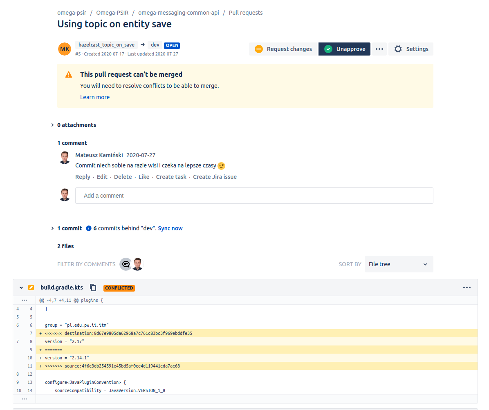Gitignore
Definicja typów plików, katalogów itp. których nie chcemy mieć w repozytorium.
W zależności od używanych IDE, języków programowania i narzędzi budowania projektu może mieć różną zawartość.
.idea/
*.iml
*.iws
*.eml
out/
.DS_Store
.svn
log/*.log
tmp/**
node_modules/
.sass-cache
dist/*.map
Narzędzia budowania aplikacji
W projektach gdzie mamy języki JVM:
- Ant - na początku było ...
- Maven - legacy z wieloma pluginami
- Gradle - aktualnie popularne, większa elastyczność
- Sbt - projekty opierające się na języku Scala
Po co to komu potrzebne...
- kontrola kompilacji kodu
- kontrola zależności (bibliotek)
- automatyczne uruchamianie testów
- analiza statyczna kodu
- tworzenie artefaktów gotowych do uruchomienia
- przesłanie artefaktów do repozytorium artefaktów
- wsparcie dewelopmentu
Maven vs Gradle
| Maven | Gradle | |
|---|---|---|
| Język | XML | Groovy, Kotlin |
| Popularność | większość projektów | nowsze projekty |
| Wtyczki | wiele gotowych, ale trudno pisać własne | prostota tworzenia własnych rozszerzeń |
Modułowość
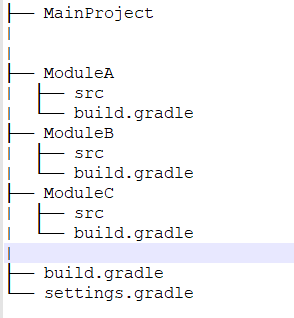
// settings.gradle
rootProject.name = "omega-psir"
include(
":framework-parent:framework-tools",
":framework-parent:framework-common",
":itm-parent:itm-core",
":itm-parent:itm-war",
":itm-parent:itm-ear"
)
build.gradle
Narzędzia budowania aplikacji v2
W projektach opartych na JS / Node, typowo frontendowe: Angular, React, Vue itp.
NPM - Node Package Manager
Bower, Gulp, Yarn, Webpack
NPM
Definicja projektu w package.json
{
"name": "gatsby-starter-hello-world",
"private": true,
"description": "A simplified bare-bones starter for Gatsby",
"version": "0.1.0",
"license": "0BSD",
"scripts": {
"build": "gatsby build",
"develop": "gatsby develop",
"format": "prettier --write \"**/*.{js,jsx,ts,tsx,json,md}\"",
"start": "npm run develop",
"serve": "gatsby serve",
"clean": "gatsby clean",
},
"dependencies": {
"bootstrap": "^4.4.1",
"gatsby": "^2.26.1",
"gatsby-plugin-manifest": "^2.12.1",
"gatsby-plugin-offline": "^3.10.2",
"gatsby-plugin-react-helmet": "^3.10.0",
"gatsby-plugin-sass": "^3.2.0",
"jquery": "^3.4.1",
"katex": "^0.11.1",
"primeicons": "^2.0.0",
"primereact": "^6.0.2",
"prismjs": "^1.23.0",
"react": "^16.12.0",
"react-dom": "^16.12.0",
"react-helmet": "^6.1.0",
"sass": "^1.32.8",
"slick-carousel": "^1.8.1"
},
"devDependencies": {
"prettier": "2.2.1"
},
"repository": {
"type": "git",
"url": "https://github.com/gatsbyjs/gatsby-starter-hello-world"
}
}
Repozytorium artefaktów
- Miejsce na umieszczanie zbudowanych i gotowych do uruchomienia części aplikacji.
- Niezbędne dla procesu ciągłego dostarczania oprogramowania.
- Szybki dostęp do wszystkich wersji oprogramowania - nasi klienci mają wybór jaką wersję chcą zainstalować.
- Proxy dla globalnych repozytoriów artefaktów.
- Umożliwia przechowywanie prywatnych bibliotek których nie chcemy udostępniać na świat.
Nexus
- Popularne i powszechnie stosowane repozytorium artefaktów różnego typu.
- Może przechowywać i rejestrować jar, war, ear, obrazy dockerowe, node modules, python packages i więcej. 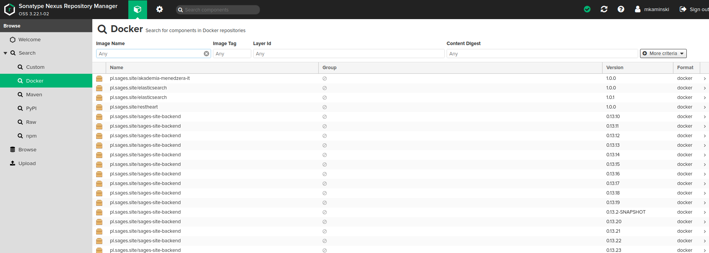
Wersjonowanie
- Identyfikacja zmian w ramach większych paczek
- Ułatwia bugtracking i rollbacking
- Polityki kompatybilnościowe
- Niezbędnik dla CI / CD
Semantic versioning
Popularna, ustandaryzowana metodyka wersjonowania: https://semver.org/

Wersjonowanie w praktyce
Tagowanie w GIT
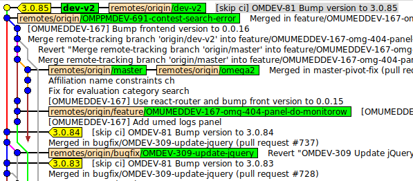
$ git commit -m "Bump version to 1.0" # lokalne
$ git push
$ git tag -a v1.0 -m "1.0" # lokalne
$ git push origin v1.0
Automatyzacja wersjonowania
W narzędziach do budowania projektu używamy gotowych pluginów do wydawania nowych wersji.
Ciągła Integracja
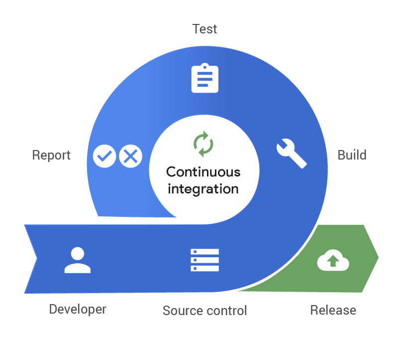Wszystko co dotychczas omówiliśmy ale w formie zautomatyzowanej - standaryzacja procesu wytwórczego oprogramowania.
Ciągłe Dostarczanie
Dodatek: zautomatyzowana instalacja produktu
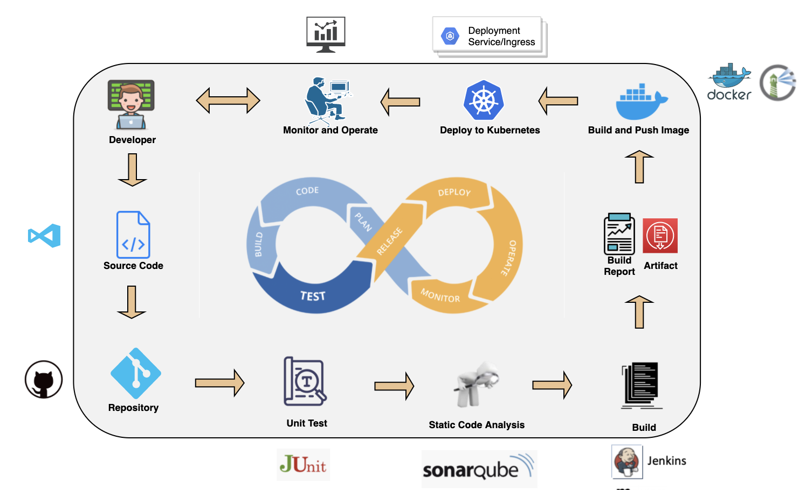Deployment pipelines
- Proces wdrożenia gotowego artefaktu i składników systemu na maszynę docelową.
- Proces nadzorowany lub nienadzorowany (ale monitorowany!)
- Według ustalonego harmongramu wdrożeń lub ad hoc w przypadku pojawienia się nowej wersji aplikacji.
- Rollback - cofnięcie do działającej wersji - w przypadku niepowodzenia.
Pipelines w praktyce
Nie warto budować swoje - istnieje multum gotowych narzędzi.
W zależności od liczby docelowych maszyn i rozwoju CI/CD wybieramy jedną z poniższych opcji:
- Niezależne od dostawcy repozytoriów kodu: Travis, Jenkins, Bamboo, ...
- Zintegrowane z repozytoriami kodu: Bitbucket Pipelines, GitHub Actions, GitLab CI/CD, ...
Bitbucket pipelines
Plik bitbucket-pipelines.yml umieszczamy w repozytorium (może używać skryptów gradle).
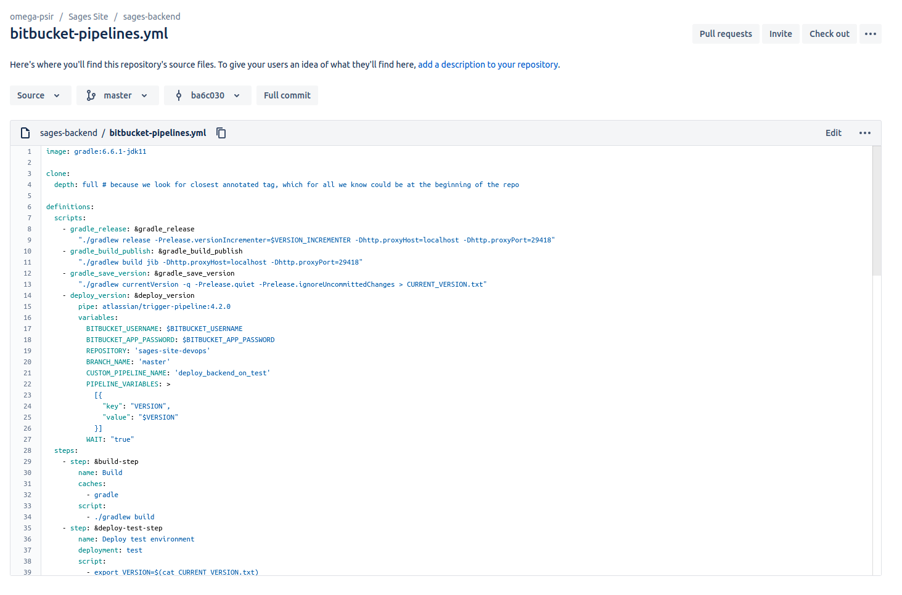Bitbucket pipelines - harmonogram
Harmonogram wdrożeń może być dowolny i uruchomiony z dowolnego brancha na dowolne środowisko.
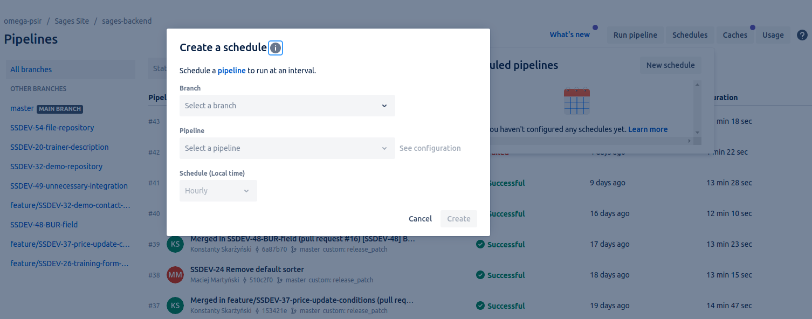Bitbucket pipelines - weryfikacja
Łatwo możemy zweryfikować co się udało wdrożyć i na jakie środowisko.
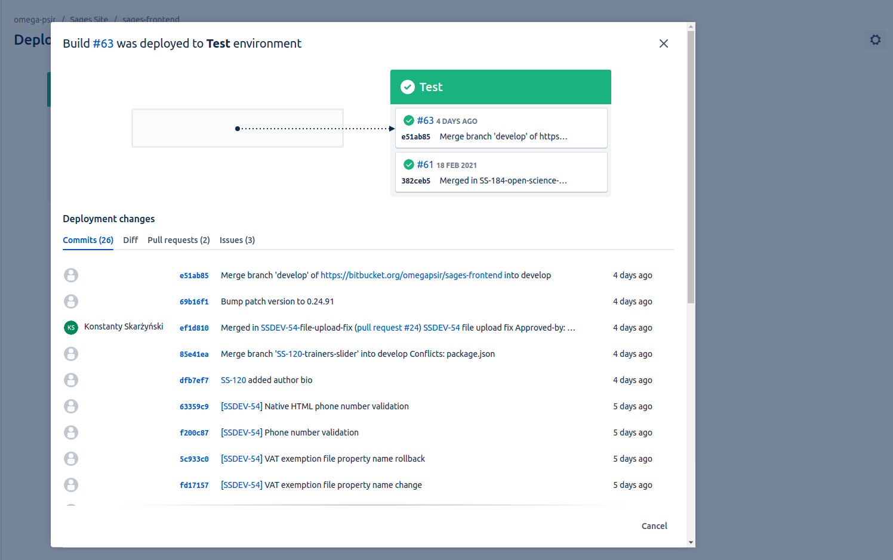Analiza statyczna kodu
- Linter - wykrywanie potencjalnych błędów bez testowania aplikacji (oszczędność czasu)
- Czystość kodu - stosowanie zasad ustalanych w każdym zespole
- Podczas budowania artefaktów lub na niezależnym serwerze - SonarQube

Monitoring - potrzeby
- Czy system został poprawnie uruchomiony po aktualizacji?
- Czy system nie padł w trakcie działania?
- Jakie są najczętsze błędy w działaniu systemu?
- Jak system korzysta z przydzielony zasobów sprzętowych?
Grafana
Grafana jest popularnym narzędziem wizualizacji zebranych informacji na temat działania systemu. 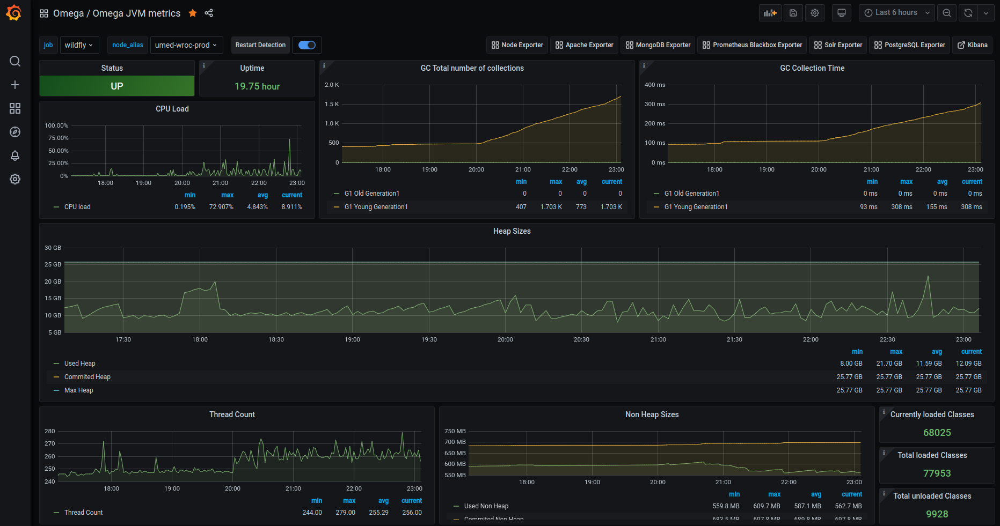Walidacja poprawności wdrożenia
Dashboardy, notyfikacje, JIRA
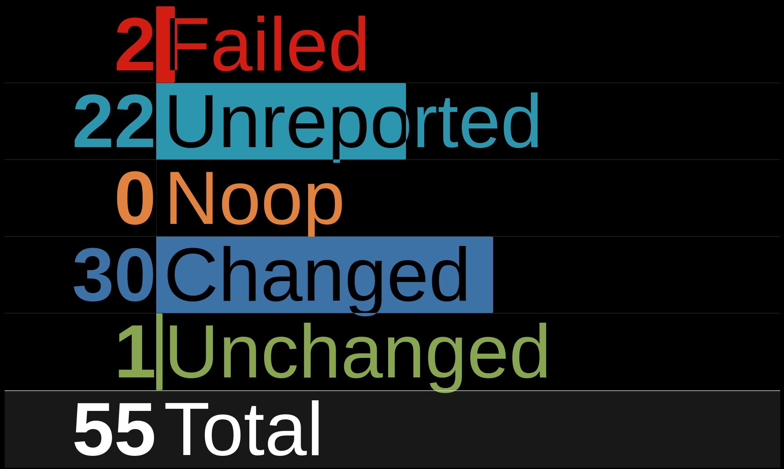JIRA
Prowadzenie projektów (zewnętrznych i wewnętrznych), współpraca z zespołem i klientem, ustalanie harmongoramu prac programistycznych, elementy automatyzacji - spięcie wszystkiego w jednym miejscu.
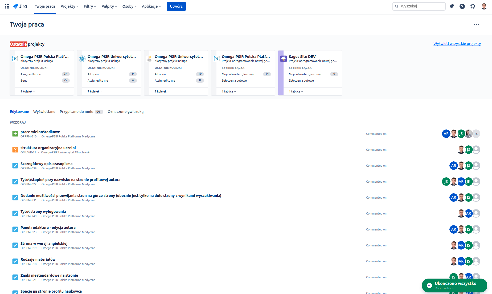Zarządzie wydawaniem wersji
Kontrola nad wydawaniem - co ma być zrobione.
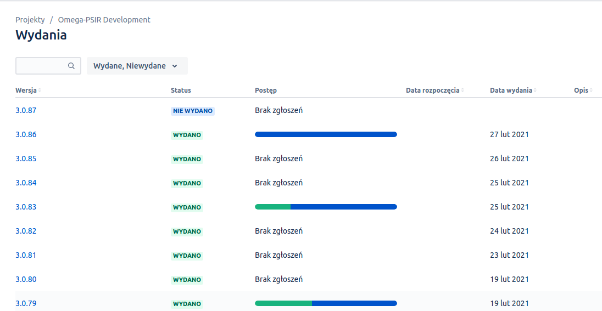Wersje w JIRA
Łatwe wyszukiwanie co znalazło się w danej wersji.
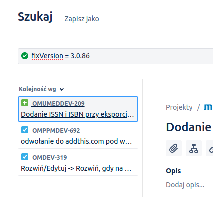Komunikacja z zespołem
Email - legacy ale czasami przydatny
Slack - podział na grupy, integracje z narzędziami programistycznymi
Trello / Jira